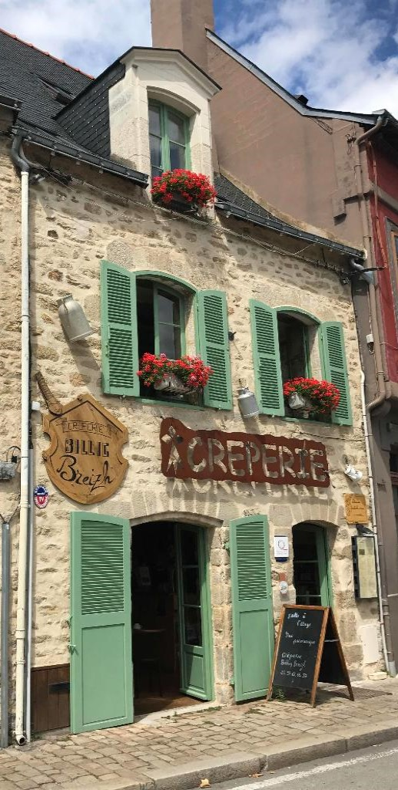
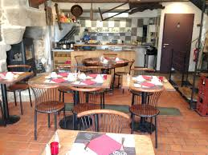
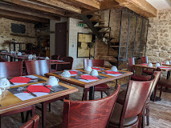

Billig Breizh
La Bretagne dans votre assiete

Situé sur le port de Vannes, nous vous proposons de déguster
galettes et crêpes dans un cadre ancien et typique.

Au Rez de chaussée, entouré d'une décoration
typiquement bretonne, vous pouvez observer nos
crêpiers confectionner devant vous crêpes et
galettes avant de les déguster.

A l'étage, d'une décoration contemporaine,
vous pouvez admirer le port
de Vannes tout en dégustant galettes et crêpes.